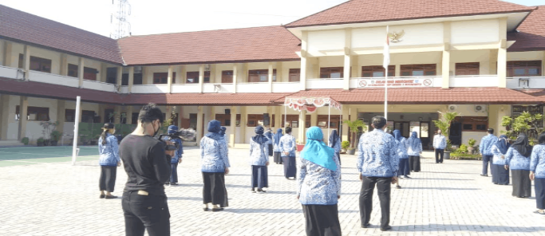

Motifs
There are maybe thousands of batik designs, many of them have special cultural significance. Scholars agreed that Javanese batik has been an extraordinarily dynamic art form, since it’s assimilating/intaking a myriad of inspirations and styles from other cultures.